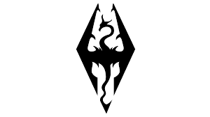
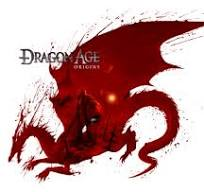
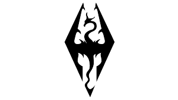
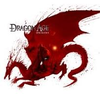
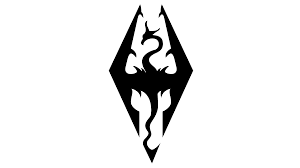
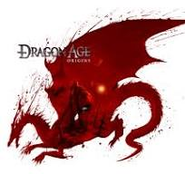

Video Games
Here are some images related to my gameing habbits
 



There are some figures and images I think may help grasp a better understanding of who I am and what I like...
Here are some images related to my gameing habbits


const slotMachine = () => {
const items = ["🍒", "🍊", "🍇", "🍉", "🍋", "🍎"];
const item1 = items
[Math.floor(Math.random() * items.length)];
const item2 = items
[Math.floor(Math.random() * items.length)];
const item3 = items
[Math.floor(Math.random() * items.length)];
console.log(`${item1} | ${item2} | ${item3}`);
if (item1 === item2 && item2 === item3) {
console.log("Congratulations! You won the jackpot!");
} else {
console.log("Sorry, try again.");
}
};
/* Slot Mechine code for learning JavaSrcipt */
import heapq
from collections import defaultdict
def huffman_encoding(data):
freq = defaultdict(int)
for char in data:
freq[char] += 1
heap = [[weight, [char, ""]]
for char, weight in freq.items()]
heapq.heapify(heap)
while len(heap) > 1:
left = heapq.heappop(heap)
right = heapq.heappop(heap)
for pair in left[1:]:
pair[1] = "0" + pair[1]
for pair in right[1:]:
pair[1] = "1" + pair[1]
heapq.heappush(heap,
[left[0] + right[0]] + left[1:] + right[1:])
huffman_code = sorted
(heapq.heappop(heap)[1:],
key=lambda x: (len(x[-1]), x))
return {char: code for char,
code in huffman_code}
def huffman_decoding
(data, huffman_code):
reverse_mapping = {code: char for char,
code in huffman_code.items()}
current_code = ""
decoded_data = ""
for bit in data:
current_code += bit
if current_code in reverse_mapping:
decoded_data += reverse_mapping
[current_code]
current_code = ""
return decoded_data
# Example usage
data = "huffman coding is a type of greedy
algorithm frequently used for lossless data compression"
huffman_code = huffman_encoding(data)
encoded_data = "".join
([huffman_code[char] for char in data])
decoded_data = huffman_decoding
(encoded_data, huffman_code)
print(f"Original data: {data}")
print(f"Encoded data: {encoded_data}")
print(f"Decoded data: {decoded_data}")
"""
Huffman coding for learning python data structures
"""
import heapq
from collections import defaultdict
def merge_sort(arr):
if len(arr) > 1:
mid = len(arr) // 2
left = arr[:mid]
right = arr[mid:]
merge_sort(left)
merge_sort(right)
i = j = k = 0
while i < len(left) and
j < len(right):
if left[i] < right[j]:
arr[k] = left[i]
i += 1
else:
arr[k] = right[j]
j += 1
k += 1
while i < len(left):
arr[k] = left[i]
i += 1
k += 1
while j < len(right):
arr[k] = right[j]
j += 1
k += 1
# Example usage
arr = [38, 27, 43, 3, 9, 82, 10]
merge_sort(arr)
print(arr)
"""
Merge Sort in python to learn some sorting
algorithms in python
"""
Some of the websites I frequent
Some of the things I like to read
Images I used in this website